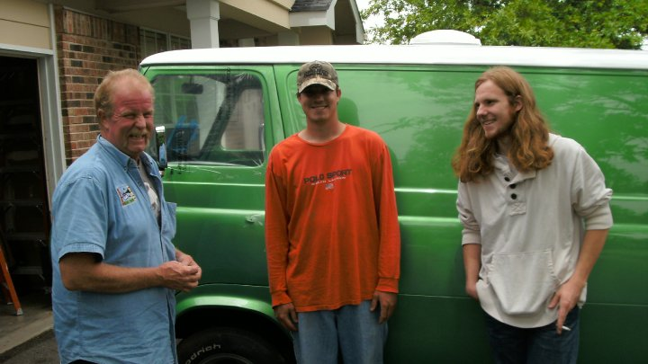

Memorial: February 15th, 2020 / 5 p.m. VFW Post 6274 115
Mimosa Ln Ballwin, MO 63011
John is survived by his sisters, Kate Yancey, Mary Jane Miller, and Camille Adams; sons, John
and Sean; daughter-in-law Lizabeth Gleason, Rachel Nachtweih. He was also loved and survived
by many friends.
John Francis Gleason (64) of St. Louis, MO, died January 19, 2020 in Colorado Springs,
Colorado. He was born August 3, 1955 to John Aloysius Gleason Sr. and Vesta Louise Gleason
(Hedrick).
John was known for his warm heart, loving nature, and unequivocal honesty. He enjoyed
building his 1964 Ford Econoline with his youngest son, fishing trout out of the Meramec
river with his oldest, and above all spending time with his loved ones and sharing his life.
John will be remembered for his fighting passion, hard work, and his never ending love for
his two sons.

He was a great man with a big heart and he will be missed in Texas as well. Keep
on truck’n on John.
He was so handy at so many things. But most of all being a father to not only his
biological children, but also to all ya kids. He provided a safe space for us
all to get together and live out our best memories. Thank you so much John. You
are so loved ❤️
I don’t know what to say.
I love man
Johnny was an original. Kind and gentle, he was always offering to lend a hand.
He looked for the good in people.We spent our childhood and adolescence as
partners in mischief blessing me with many sweet memories of my big brother. He
lives in my heart forever. Love to John and Sean. ❤️
I’m in shock. Although it’s been years, I have many fond memories with
John And Camille. We had lots of fun together. He was always inclusive
of others. He had a big heart. He will be missed. Rest In Peace my
brother.
John was a complete original. One of the funniest people I ever met, always there
to help, never to hinder. We three (Cammy, John, and I) were great friends
during those last years of highschool and just after…a wonderful exploratory
time for us. I remember when he first took off for Texas…oh boy! John was that
guy, whereas the party didn’t really start til he arrived. He was funny beyond
measure (actually hilarious most days) and a great friend. He left no one
behind, always willing to help out even people I didn’t care for…always seeing
the human side of things. He had a big heart and was a true romantic, emanating
that everyday we spent together. I wish him a beautiful peace with the love he
always deserved, a true original. He will be missed.
The world is less bright without you in it John. Your presence completely altered
our little corner of Texas and I think we are all better for knowing you. Rest
easy kind soul you’ll be greatly missed.
Johnny was one of my life’s greatest gifts, a true friend, who I could talk to
about anything. He was honest and true to himself. You always knew what he said
was what he meant, and regardless of agreement or disagreement, he never let you
forget he cared. Will forever hold his laughter (often to the point of tears) in
my heart. Miss you JG. Much love to you’re family, who were, and are, the core
of your world.
Love you John RIP! You always reached out to us old friends We will miss you.
My darling sweet brother. I changed his diapers, fed him bottles, chased him
around constantly. He was a very active toddler! A wild teenager and a great
man. He adored John and Sean, our mom and dad, Penny and Jack, his brother Jim,
and us girls, Mary Jane, Camille and myself. In our later years he became a
loyal and great friend to me. A rock when I needed support. Always independent
always cheerful and most of all always equipped with a laugh. My heart is broken
I will miss him forever.
I was very fortunate to have known John during our school years and then again
later in life. John had a never ending amount of patience. He always saw the
best in people. He was a great dad to John and Sean. My heart goes out to both
of them.
I have fond memories of John taking us fishing as kids. He had incredible
patience for all the shenanigans John and i got into. He will be missed.
RIP John, I didn’t know him well but I know his son John well. So sorry for your
loss!
John was a kind and loving parental figure in the lives of many. I will always
remember his encouragement in playing music, opening up his home to young
musicians to practice in the basement…You will be thought of and remembered as a
man with a giant heart, who was a great father, and knew how to have a good
time. Thank you for all the good times we shared, I cherish them deeply.
Omg! I don’t know what to say. So sorry for the family’s loss. Great man. In my
prayers with my tears.
“How lucky am I, to have something that makes saying goodbye so hard”
-A.A. Milne

He was a great man with a big heart and he will be missed in Texas as well. Keep on truck’n on John.
He was so handy at so many things. But most of all being a father to not only his biological children, but also to all ya kids. He provided a safe space for us all to get together and live out our best memories. Thank you so much John. You are so loved ❤️
I don’t know what to say.
I love man
Johnny was an original. Kind and gentle, he was always offering to lend a hand. He looked for the good in people.We spent our childhood and adolescence as partners in mischief blessing me with many sweet memories of my big brother. He lives in my heart forever. Love to John and Sean. ❤️
I’m in shock. Although it’s been years, I have many fond memories with John And Camille. We had lots of fun together. He was always inclusive of others. He had a big heart. He will be missed. Rest In Peace my brother.
John was a complete original. One of the funniest people I ever met, always there to help, never to hinder. We three (Cammy, John, and I) were great friends during those last years of highschool and just after…a wonderful exploratory time for us. I remember when he first took off for Texas…oh boy! John was that guy, whereas the party didn’t really start til he arrived. He was funny beyond measure (actually hilarious most days) and a great friend. He left no one behind, always willing to help out even people I didn’t care for…always seeing the human side of things. He had a big heart and was a true romantic, emanating that everyday we spent together. I wish him a beautiful peace with the love he always deserved, a true original. He will be missed.
The world is less bright without you in it John. Your presence completely altered our little corner of Texas and I think we are all better for knowing you. Rest easy kind soul you’ll be greatly missed.
Johnny was one of my life’s greatest gifts, a true friend, who I could talk to about anything. He was honest and true to himself. You always knew what he said was what he meant, and regardless of agreement or disagreement, he never let you forget he cared. Will forever hold his laughter (often to the point of tears) in my heart. Miss you JG. Much love to you’re family, who were, and are, the core of your world.
Love you John RIP! You always reached out to us old friends We will miss you.
My darling sweet brother. I changed his diapers, fed him bottles, chased him around constantly. He was a very active toddler! A wild teenager and a great man. He adored John and Sean, our mom and dad, Penny and Jack, his brother Jim, and us girls, Mary Jane, Camille and myself. In our later years he became a loyal and great friend to me. A rock when I needed support. Always independent always cheerful and most of all always equipped with a laugh. My heart is broken I will miss him forever.
I was very fortunate to have known John during our school years and then again later in life. John had a never ending amount of patience. He always saw the best in people. He was a great dad to John and Sean. My heart goes out to both of them.
I have fond memories of John taking us fishing as kids. He had incredible patience for all the shenanigans John and i got into. He will be missed.
RIP John, I didn’t know him well but I know his son John well. So sorry for your loss!
John was a kind and loving parental figure in the lives of many. I will always remember his encouragement in playing music, opening up his home to young musicians to practice in the basement…You will be thought of and remembered as a man with a giant heart, who was a great father, and knew how to have a good time. Thank you for all the good times we shared, I cherish them deeply.
Omg! I don’t know what to say. So sorry for the family’s loss. Great man. In my prayers with my tears.
“How lucky am I, to have something that makes saying goodbye so hard”
-A.A. Milne